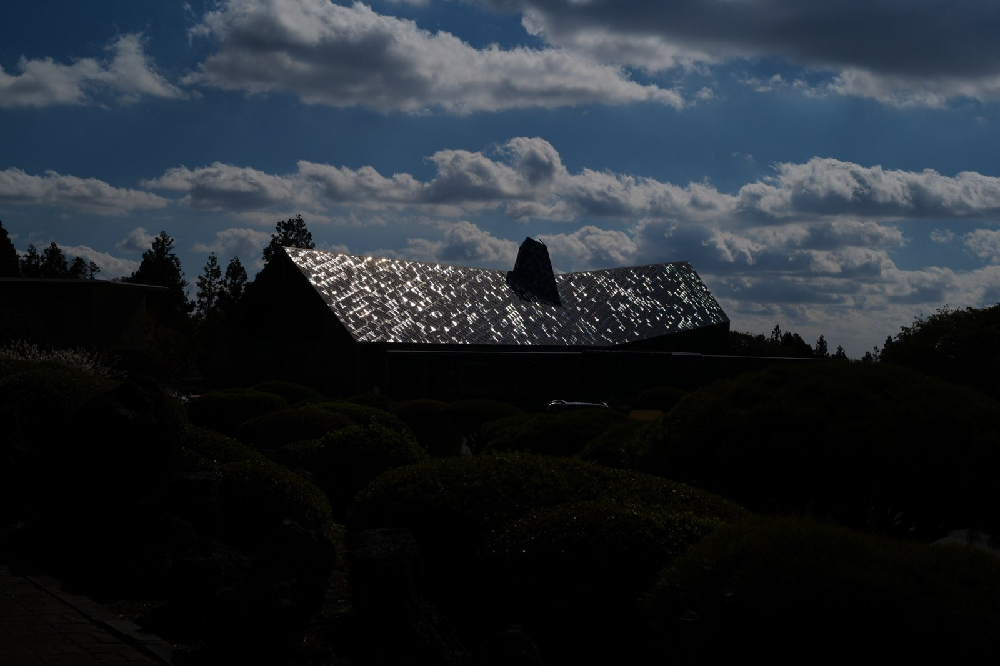
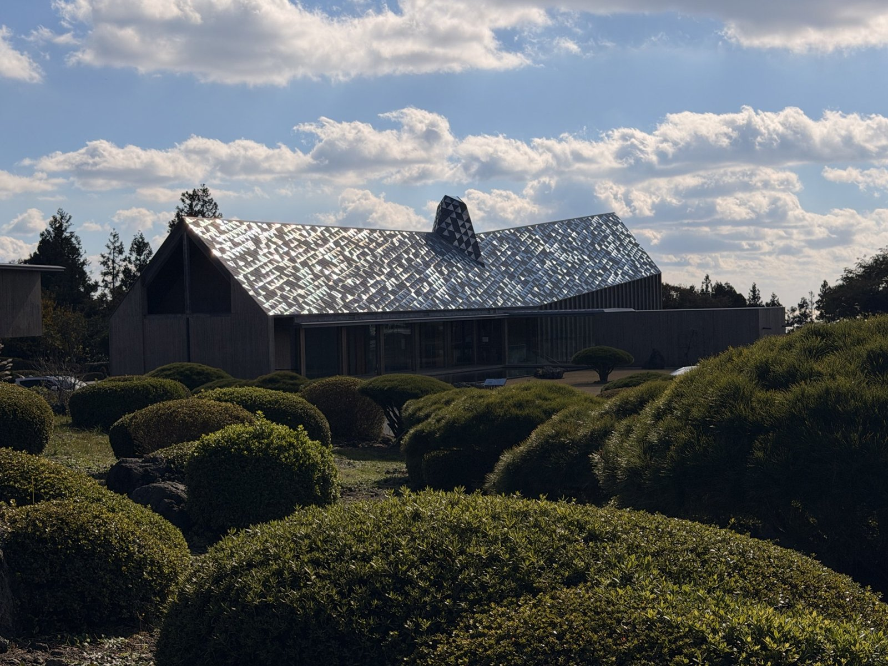
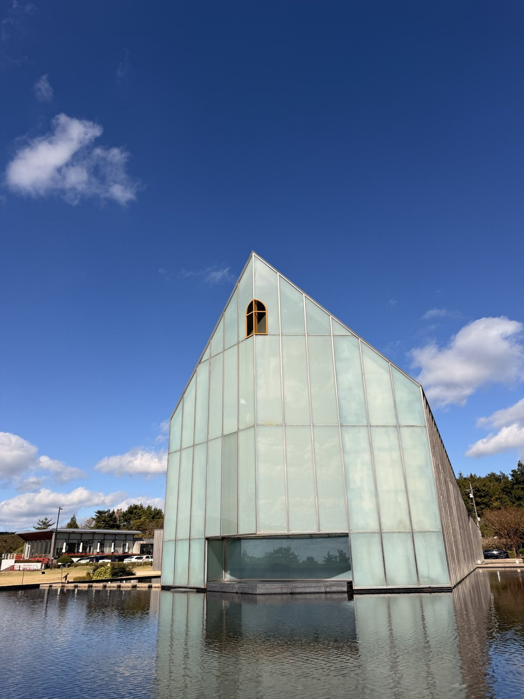
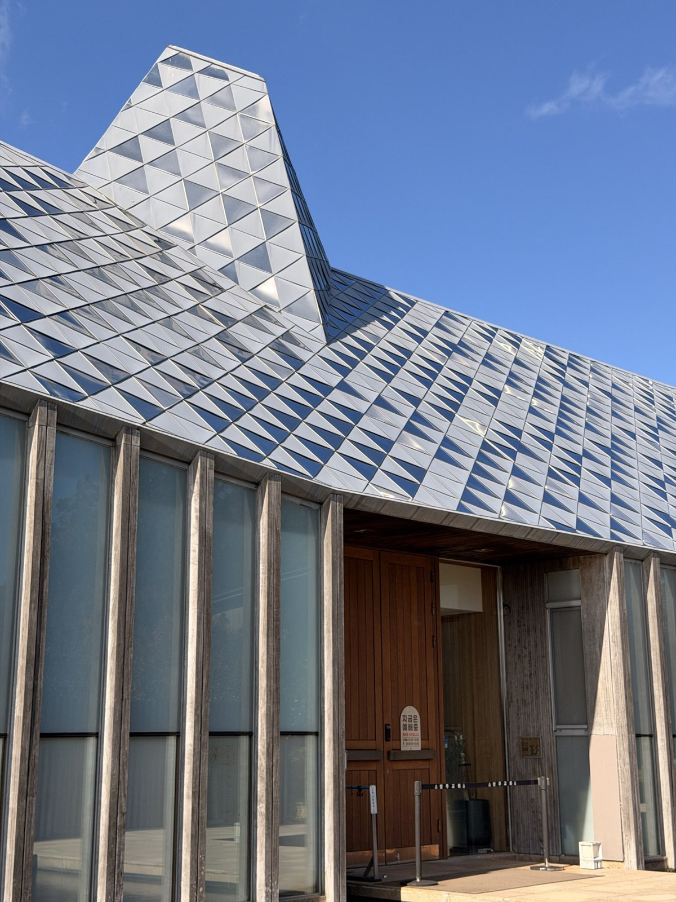
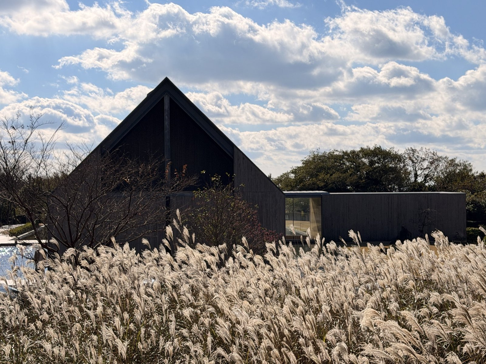
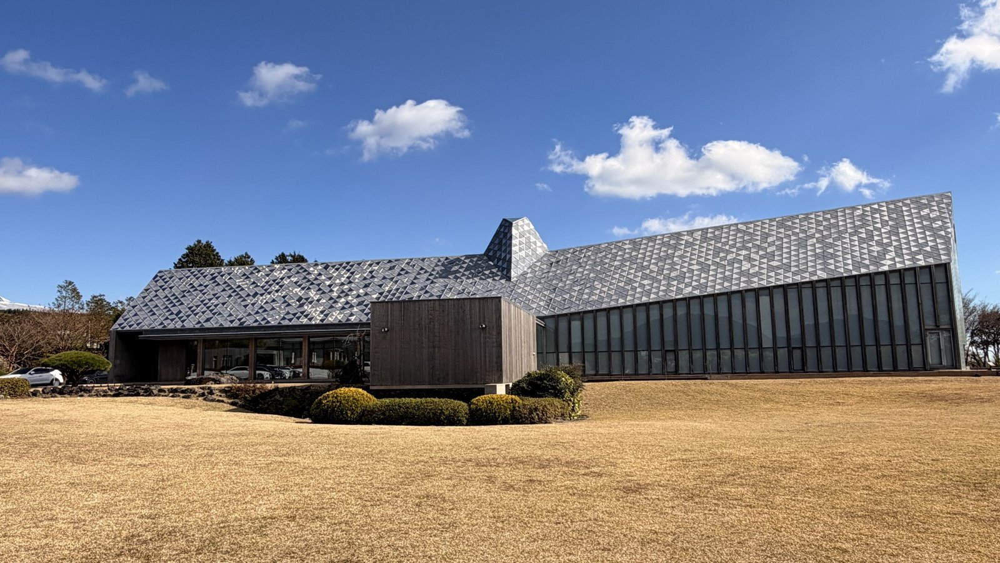

2026.11.22
방주교회, 물 위의 회색지대
철과 나무, 그리고 물과 풍경. 이타미 준의 방주교회에서 포용과 경건의 회색지대를 봅니다.
11월의 제주
11월, 출장으로 제주에 내려갔습니다. 1100고지에는 벌써 눈이 내렸다는데, 아래쪽 날씨는 이상하리만치 따뜻했습니다. 한 섬 안에서 겨울과 가을이 나란히 놓여 있는 날이었습니다.
일정 사이 점심 무렵, 안덕면의 방주교회에 들렀습니다. 재일 건축가 이타미 준(유동룡)이 노아의 방주를 모티브로 설계해 2009년에 완공한 교회입니다. 이름은 오래전부터 알고 있었지만, 직접 마주한 건 이번이 처음이었습니다.
빛을 반사하는 지붕
차에서 내리자마자 지붕이 먼저 눈에 들어왔습니다. 삼각형 금속 판 수백 장이 제각각 다른 각도로 햇빛을 되돌려 보내고 있었습니다. 구름이 지날 때마다 반짝임의 자리가 바뀌었고, 지붕은 멈춰 있는데도 움직이는 것처럼 보였습니다.
그 장면 앞에서 작은 경외와 찬란함, 그리고 예상하지 못한 안도감이 한꺼번에 들었습니다. 방주라는 이름 때문이었을까요. 큰 물을 지나 마침내 안전한 곳에 닿은 배를 바라보는 기분이었습니다.


물 위에 떠 있는 건물
건물 둘레에는 얕은 수조가 놓여 있습니다. 가까이 다가갈수록 교회는 땅이 아니라 작은 호수 위에 떠 있는 것처럼 보였습니다. 수면에는 하늘과 구름, 건물의 유리 벽이 그대로 비쳤습니다.
그곳의 고요함은 우연히 생긴 것이 아니라는 느낌이 들었습니다. 물은 건물과 사람 사이에 한 걸음의 거리를 두고, 그 거리가 목소리를 낮추고 걸음을 늦춥니다. 의도된 고요함이었습니다.

나무와 철
벽은 세로로 긴 나무로 두른 파사드이고, 그 위를 철제 지붕이 덮고 있습니다. 나무는 빛을 머금고, 철은 빛을 튕겨 냅니다. 한 건물 안에서 빛을 대하는 방식이 정반대입니다.
오래 비바람을 맞아 회색으로 바랜 나무는 주변의 억새, 돌담, 누렇게 마른 잔디와 자연스럽게 이어집니다. 반면 지붕은 주변 어느 것과도 닮지 않았습니다. 땅에 속한 것과 하늘에 속한 것이 한 치의 틈 없이 맞물려 있고, 이 대비가 건물에 힘을 줍니다.


회색지대
예배당은 대중과 너무 가까워서도, 그렇다고 너무 떨어져 있어서도 안 되는 공간이라고 생각합니다. 누구나 들어올 수 있어야 하지만, 들어온 사람은 바깥과 다른 곳에 왔다고 느껴야 합니다. 그 사이 어딘가에 있는 회색지대입니다.
하나의 소재로 건물 전체를 구성했다면 이 회색의 영역을 구현하기 어려웠을 것입니다. 나무만으로는 너무 친근하고, 철만으로는 너무 차갑습니다. 철과 나무, 그리고 물과 풍경. 이 모든 것의 조합이 ‘포용’의 메시지와 ‘경건’의 분위기를 동시에 전합니다.
돌아오는 길, 다시 돌아본 지붕은 여전히 빛나고 있었습니다. 멀리 눈 덮인 한라산 아래, 따뜻한 점심의 햇빛을 담고 물 위에 조용히 멈춰 있는 배 한 척이었습니다.
